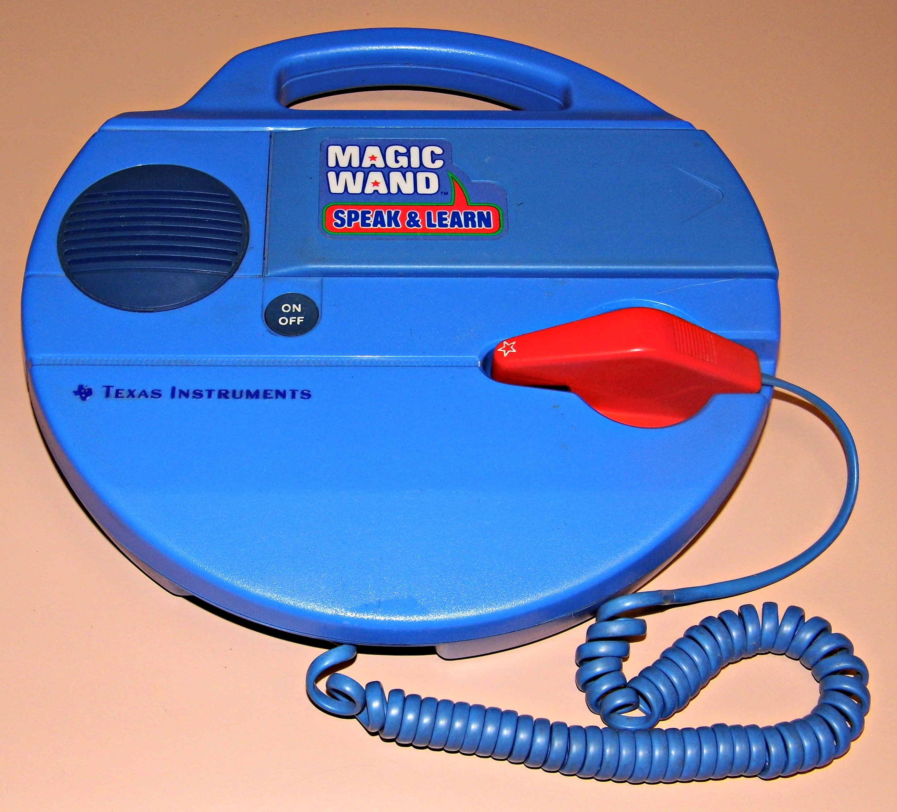

TI Magic Wand Speaking Reader
The barcode wand that read children's books aloud, years before LeapFrog

Overview
The TI Magic Wand Speaking Reader, introduced June 1982, was an educational toy from Texas Instruments that fused barcode scanning with speech synthesis. A disc-shaped base unit (reminiscent of an LP record) contained TI's TMS5220 Voice Synthesis Processor — the same chip used in the iconic Speak & Spell. A thick pen-shaped barcode wand, attached by a coiled cable, was swiped across barcode strips printed beneath the text in specially printed picture books. The base unit decoded the barcodes into LPC allophone strings and spoke the words aloud through a built-in speaker. At $120 for the base and $12 per book, with licensed titles including Spider-Man, E.T., and Berenstain Bears, the Magic Wand was an ambitious attempt to make books interactive before the concept of "interactive" existed. Renamed "Speak & Learn" shortly before discontinuation when TI shuttered its Consumer Products Division in 1983.
Deep dive
The Magic Wand emerged from TI's Consumer Products Division in Lubbock, Texas, which had previously produced the Speak & Spell (1978), Speak & Math, and Speak & Read. The division was riding the success of TI's LPC (Linear Predictive Coding) speech synthesis technology, which encoded spoken words as streams of allophones — the atomic sound units of speech — stored in ROM. For the Magic Wand, these allophone strings were encoded as barcodes printed directly in children's books. Kathleen M. Goudie Marshall, a Member of Technical Staff at TI's Consumer Products Division from 1979-1983, confirmed that text-to-speech capability was used during book development to generate first-pass allophone strings, which were then hand-edited for optimal prosody before encoding into barcodes. The Physical Ritual. The interaction was embodied in a way that modern touchscreens cannot replicate. A child grasped the wand, aligned it with the start of a barcode strip, and pulled it steadily left-to-right. The wand's IR LED and phototransistor behind a black infrared-transmissive tip read the reflectance pattern. Successful reads produced spoken words, sound effects, or music. Each book ended with comprehension questions: the base unit asked a question, and the child answered by swiping the wand over the correct answer's barcode — turning reading into a reciprocal dialogue. The long coiled cable allowed the wand to reach any corner of the large-format books but tethered the child to the base unit in a way that defined the play space. The base was powered by 4 D-cell batteries, weighed 26 ounces, and measured 11\" × 11\" × 2.3\". Technical Architecture. Internally, the system used just three main ICs: a C14007 4-bit microcontroller (likely a TMS1000 derivative), the TMS5220 Voice Synthesis Processor with updated LPC-10 table, and a TMC0355/CD2228 32-kilobit Voice Synthesis Memory. The wand contained an infrared LED transmitter and phototransistor receiver. TI published at least 14 books across three reading levels — Toddler, Preschool, and Early Elementary — including licensed titles like "The Amazing Spider-Man in Skyscraper Caper" (Marvel), "Talking E.T. Wordbook" (Universal), and "The Berenstain Bears Olympics." Legacy. The Magic Wand's disappearance had nothing to do with the product itself. In 1983, TI exited consumer products entirely, shutting down the Lubbock division. The wand, the books, and the manufacturing tooling all vanished. The product was briefly renamed "Speak & Learn" — aligning it with the Speak & Spell brand — before discontinuation. TIME Magazine featured the Magic Wand in June 1982 alongside a voice-controlled ship engine, capturing a moment when speech synthesis seemed poised to transform everything. It wouldn't — not yet — but the Magic Wand's paradigm of wand-swiping to trigger speech would resurface two decades later in the LeapFrog LeapPad.
Team & pioneers
- Texas Instruments Consumer Products Division (Lubbock, TX). Produced the Speak & Spell family and the Magic Wand; division shuttered in 1983.
- Kathleen M. Goudie Marshall. Member of Technical Staff, TI Consumer Products Division (1979-1983); documented the allophone-based speech development process for the Magic Wand.
Media
Sources
- Datamath Calculator Museum — Magic Wand page (comprehensive collector reference with teardown photos and book list)
- TIME Magazine, June 7, 1982 — "Now Hear This: Full Ahead!" (contemporary press coverage)
- Wikipedia — Texas Instruments LPC Speech Chips (TMS5220 used in Magic Wand)
- Wikimedia Commons image — Joe Haupt, CC BY-SA 2.0